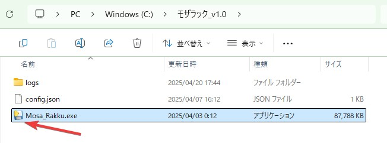
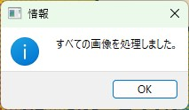

モザラック (Mosa-Rakku) 操作マニュアル
モザラックは、画像に簡単にモザイク、黒塗り、白塗り、ガウスぼかしなどの効果を適用できる便利なツールです。このマニュアルでは、初めて使う方でも分かりやすいよう、基本的な操作方法からショートカットキーまで詳しく説明します。
目次
1. はじめに
モザラック（Mosa-Rakku）は、画像に簡単にモザイク効果を適用するためのツールです。プライバシー保護や機密情報の隠蔽など、様々な場面で活用できます。
システム要件
- Windows 10/11
- 最小画面解像度: 1024×768
インストール方法
特別なインストール作業は不要です。Mosa_Rakku.exe ファイルを任意の場所に配置して、ダブルクリックで起動できます。
1 メインプログラムファイル（Mosa_Rakku.exe）があるフォルダを開きます。
2. 基本操作
ソフトウェアの起動
1 Mosa_Rakku.exe をダブルクリックします。
2 以下のようなメイン画面が表示されます。

新規プロファイルの作成
1 メイン画面上部の「管理名」プルダウンの右側にある「新規」ボタンをクリックします。
2 「設定の追加」ダイアログが表示されるので、任意の管理名を入力し「OK」をクリックします。（例: 「123」）
3 入力した管理名が「管理名」プルダウンに表示されます。
フォルダの設定
1 「入力フォルダ」の右側にある「参照」ボタンをクリックします。
2 モザイク処理を行いたい画像が格納されているフォルダを選択します。
便利な使い方: あらかじめ「input」などの名前のフォルダを用意し、そこに処理したい画像をまとめておくと効率的です。
3 同様に「出力フォルダ」の右側にある「参照」ボタンをクリックし、処理後の画像を保存するフォルダを選択します。

4 サブフォルダ内の画像も一括で処理したい場合は、「サブフォルダを含める」にチェックを入れます。
3. 詳細設定
画像検索と表示
1 フォルダの設定が完了したら、「画像検索」ボタンをクリックします。
ショートカットキー F5 でも同じ操作が可能です。
2 指定したフォルダ内の画像が読み込まれ、表示されます。
処理方法の選択
1 「モザイク」「黒塗り」「白塗り」「ガウスぼかし」から適用したい効果を選択します。
デフォルトでは「モザイク」が選択されています。
2 効果の強さ（数値）を調整します。
- モザイクやガウスぼかしの場合、この数値が大きいほど効果が強くなります。
- 例: モザイクの場合は「30」に設定すると、30ピクセル四方のモザイクが適用されます。
3 設定が完了したら「保存」ボタンをクリックして、現在の設定を管理名に関連付けて保存します。
Exif情報の保存
画像のメタデータ（Exif情報）を保持したい場合は、「Exifを保存する」にチェックを入れます。
4. モザイク処理の方法
1 画像上でモザイクを適用したい範囲の左上の位置でマウスの左ボタンを押します。
2 そのままマウスを右下方向にドラッグします。
ドラッグ中、リアルタイムで選択範囲にモザイク効果が適用されます。
3 画像内の他の部分にも同じ手順でモザイクを適用できます。
4 次の画像に進むには F キーを押します。
5 前の画像に戻るには A キーを押します。
6 すべての画像の処理が完了すると、「すべての画像を処理しました。」というメッセージが表示されます。
5. 便利なショートカットキー
モザラックでは、効率的な操作のために以下のショートカットキーが用意されています。
| キー | 機能 |
|---|---|
| F | 次の画像に進む |
| A | 前の画像に戻る |
| F5 | 画像検索（入力フォルダ内の画像を再読み込み） |
| Ctrl + Z | 直前のモザイク操作を取り消す |
| Ctrl + G | 現在の画像の編集をすべてリセット（元の状態に戻す） |
| ESC | 現在の操作をキャンセル |
| Delete | アプリケーションを終了 |
これらのショートカットキーは「操作ガイド」ボタンをクリックすると表示される画面でも確認できます。
6. プロファイル管理
既存プロファイルの更新
設定を変更した後、「更新」ボタンをクリックすると、現在選択されている管理名の設定情報が更新されます。
プロファイルの削除
不要になった管理名（プロファイル）は「削除」ボタンをクリックして削除できます。
7. トラブルシューティング
画像が表示されない場合
- 指定した入力フォルダに対応形式の画像ファイルが存在するか確認してください。
- 「画像検索」ボタンを押して、再度読み込みを行ってください。
変更が保存されない場合
- 設定変更後に「保存」ボタンをクリックしているか確認してください。
- アプリケーションを管理者権限で実行してみてください。
モザイクがかからない場合
- 「モザイク」「黒塗り」「白塗り」「ガウスぼかし」のいずれかが選択されているか確認してください。
- ドラッグ操作が正しく行われているか確認してください（左上から右下へドラッグ）。
モザラックを使いこなすことで、画像のプライバシー保護や機密情報の隠蔽を簡単に行うことができます。このマニュアルが皆様のお役に立てば幸いです。
ご不明な点やご質問がございましたら、お気軽にお問い合わせください。
マニュアル作成日: 2025年4月20日
バージョン: v1.0
モザラック v1.0 - 主な機能
- シンプルで直感的なユーザーインターフェース
- 複数の効果（モザイク、黒塗り、白塗り、ガウスぼかし）
- 複数フォルダの一括処理機能
- 効果の強さ調整機能
- プロファイル管理で複数の設定を保存可能
- Exif情報の保持機能
お疲れ様でした！これでモザラックの基本的な使い方をマスターしていただけたかと思います。快適なモザイク処理ライフをお楽しみください！